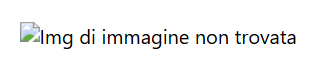

Gestione MIME e Errori
Le MIME Type (Multipurpose Internet Mail Extensions) indicano al browser il tipo di contenuto ricevuto dal server, così da gestirlo correttamente (es. HTML, immagini, CSS...). Le MIME Type permettono al browser di sapere *come interpretare* il contenuto ricevuto. Se il server restituisce una MIME errata (es: `text/html` invece di `image/png`), il browser potrebbe mostrare errori o non visualizzare correttamente i contenuti.
Esempio di intestazione HTTP con MIME
GET /index.html HTTP/1.1
Host: localhost:8080
HTTP/1.1 200 OK
Content-Type: text/html
Content-Length: 1024
Nel campo Content-Type: text/html, il server informa il browser che il contenuto è una pagina HTML.
La pagina Errori non esiste quindi porterà all'errore 404
Alcuni errori standard:
- 200 OK: La richiesta è andata a buon fine, la risorsa viene restituita correttamente.
- 301 Moved Permanently: La risorsa è stata spostata in modo permanente a un nuovo URL.
- 304 Not Modified: La risorsa non è stata modificata dal momento dell'ultima richiesta.
- 400 Bad Request: La richiesta del client non è corretta.
- 401 Unauthorized: La richiesta richiede autenticazione, ma non è stata fornita.
- 403 Forbidden: Il server ha capito la richiesta, ma rifiuta l'accesso.
- 500 Internal Server Error: Errore generico lato server.
- 503 Service Unavailable: Il server è momentaneamente non disponibile.
Errore 404
Cliccando sulla pagina Errori viene mostrato un errore 404: questo accade quando il client richiede una risorsa inesistente. Il server risponde con “404 Not Found”.
Errore: Immagine non trovata
Se in una pagina HTML è presente un'immagine che non esiste o non è salvata nella directory corretta, il server carica la pagina web ma non mostra l'immagine.